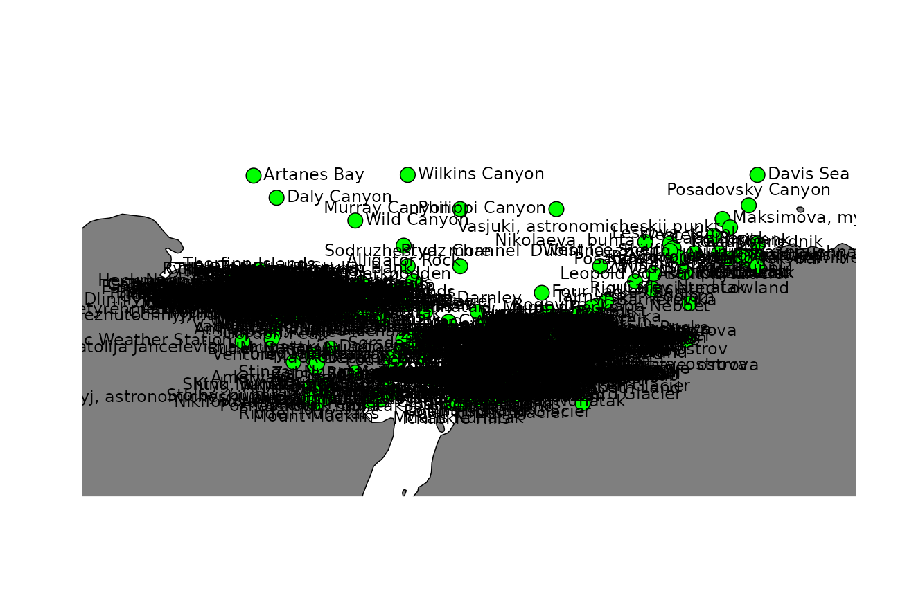

Overview
This R package provides easy access to Antarctic geographic place name information, and tools for working with those names.
The authoritative source of place names in Antarctica is the Composite Gazetteer of Antarctica (CGA), which is produced by the Scientific Committee on Antarctic Research (SCAR). The CGA consists of approximately 37,000 names corresponding to 19,000 distinct features. It covers features south of 60 °S, including terrestrial and undersea or under-ice features.
There is no single naming authority responsible for place names in Antarctica because it does not fall under the sovereignty of any one nation. In general, individual countries have administrative bodies that are responsible for their national policy on, and authorisation and use of, Antarctic names. The CGA is a compilation of place names that have been submitted by representatives of national names committees from 22 countries.
The composite nature of the CGA means that there may be multiple names associated with a given feature. Consider using the an_preferred() function for resolving a single name per feature.
For more information, see the CGA home page. The CGA was begun in 1992. Since 2008, Italy and Australia have jointly managed the CGA, the former taking care of the editing, the latter maintaining the database and website. The SCAR Standing Committee on Antarctic Geographic Information (SCAGI) coordinates the project. This R package is a product of the SCAR Expert Group on Antarctic Biodiversity Informatics and SCAGI.
Citing
The SCAR Composite Gazetteer of Antarctica is made available under a CC-BY license. If you use it, please cite it:
Composite Gazetteer of Antarctica, Scientific Committee on Antarctic Research. GCMD Metadata (http://gcmd.nasa.gov/records/SCAR_Gazetteer.html)
Installing
install.packages("remotes")
remotes::install_github("ropensci/antanym")Usage
Start by fetching the names data from the host server. Here we use a temporary cache so that we can re-load it later in the session without needing to re-download it:
If you want to be able to work offline, you can cache the data to a directory that will persist between R sessions. The location of this directory is determined by rappdirs::user_cache_dir() (see an_cache_directory("persistent") if you want to know what it is):
g <- an_read(cache = "persistent")If you prefer working with sp objects, then this will return a SpatialPointsDataFrame:
gsp <- an_read(sp = TRUE, cache = "session")Data summary
How many names do we have in total?
nrow(g)## [1] 39141Corresponding to how many distinct features?
## [1] 20123We can get a list of the feature types in the data:
head(an_feature_types(g), 10)## [1] "Aiguilles" "Anchorage" "Archipelago"
## [4] "Arm" "AWS" "Bank"
## [7] "Basin" "Bay" "Beach"
## [10] "Bedrock break point"Data structure
A description of the data structure can be found in the an_load function help, (the same information is available via an_cga_metadata). By default, the gazetteer data consists of these columns:
| field | description |
|---|---|
| gaz_id | The unique identifier of each gazetteer entry. Note that the same feature (e.g. ‘Browns Glacier’) might have multiple gazetteer entries, each with their own gaz_id, because the feature has been named multiple times by different naming authorities. The scar_common_id value for these entries will be identical, because scar_common_id identifies the feature itself |
| scar_common_id | The unique identifier (in the Composite Gazetteer of Antarctica) of the feature. A single feature may have multiple names, given by different naming authorities |
| place_name | The name of the feature |
| place_name_transliterated | The name of the feature transliterated to simple ASCII characters (e.g. with diacritical marks removed) |
| longitude | The longitude of the feature (negative values indicate degrees west). Note that many features are not point features (e.g. mountains, lakes), in which case the longitude and latitude values are indicative only, generally of the centroid of the feature |
| latitude | The latitude of the feature (negative values indicate degrees south). Note that many features are not point features (e.g. mountains, lakes), in which case the longitude and latitude values are indicative only, generally of the centroid of the feature |
| altitude | The altitude of the feature, in metres relative to sea level. Negative values indicate features below sea level |
| feature_type_name | The feature type (e.g. ‘Archipelago’, ‘Channel’, ‘Mountain’). See an_feature_types for a full list |
| date_named | The date on which the feature was named |
| narrative | A text description of the feature; may include a synopsis of the history of its name |
| named_for | The person after whom the feature was named, or other reason for its naming. For historical reasons the distinction between ‘narrative’ and ‘named for’ is not always obvious |
| origin | The naming authority that provided the name. This is a country name, or organisation name for names that did not come from a national source |
| relic | If TRUE, this name is associated with a feature that no longer exists (e.g. an ice shelf feature that has disappeared) |
| gazetteer | The gazetteer from which this information came (currently only ‘CGA’) |
A few additional (but probably less useful) columns can be included by calling an_read(..., simplified = FALSE). Consult the an_read documentation for more information.
Finding names
The an_filter function provides a range of options to find the names you are interested in.
Basic searching
A simple search for any place name containing the word ‘William’:
an_filter(g, query = "William")## # A tibble: 75 × 14
## gaz_id scar_common_id place_name place_name_translite…¹ longitude latitude
## <dbl> <dbl> <chr> <chr> <dbl> <dbl>
## 1 8 16073 William Scor… William Scoresby Arch… 59.8 -67.3
## 2 75 16074 William Scor… William Scoresby Bay 59.6 -67.4
## 3 559 16090 Williamson G… Williamson Glacier 114. -66.6
## 4 643 16092 Williamson H… Williamson Head 158. -69.2
## 5 1240 16083 Williams Lake Williams Lake 78.2 -68.5
## 6 1428 16096 Mount Willia… Mount Williams 50.8 -66.8
## 7 1825 16084 Williams Nun… Williams Nunatak 111. -66.4
## 8 2189 16097 Point Willia… Point Williams 67.6 -67.8
## 9 2430 16088 Williams Roc… Williams Rocks 62.8 -67.4
## 10 100917 2288 Fort William… Fort William, punta -59.6 -62.4
## # ℹ 65 more rows
## # ℹ abbreviated name: ¹place_name_transliterated
## # ℹ 8 more variables: altitude <dbl>, feature_type_name <chr>,
## # date_named <dttm>, narrative <chr>, named_for <chr>, origin <chr>,
## # relic <lgl>, gazetteer <chr>We can filter according to the country or organisation that issued the name. Which bodies (countries or organisations) provided the names in our data?
an_origins(g)## [1] "Argentina" "Australia"
## [3] "Austria" "Belgium"
## [5] "Bulgaria" "Canada"
## [7] "Chile" "China"
## [9] "Ecuador" "France"
## [11] "GEBCO" "Germany"
## [13] "India" "Italy"
## [15] "Japan" "Korea, Republic of"
## [17] "New Zealand" "Norway"
## [19] "Poland" "Russia"
## [21] "South Africa" "Spain"
## [23] "Ukraine" "United Kingdom"
## [25] "United States of America" "Uruguay"Find names containing “William” and originating from Australia or the USA:
an_filter(g, query = "William", origin = "Australia|United States of America")## # A tibble: 39 × 14
## gaz_id scar_common_id place_name place_name_translite…¹ longitude latitude
## <dbl> <dbl> <chr> <chr> <dbl> <dbl>
## 1 8 16073 William Scor… William Scoresby Arch… 59.8 -67.3
## 2 75 16074 William Scor… William Scoresby Bay 59.6 -67.4
## 3 559 16090 Williamson G… Williamson Glacier 114. -66.6
## 4 643 16092 Williamson H… Williamson Head 158. -69.2
## 5 1240 16083 Williams Lake Williams Lake 78.2 -68.5
## 6 1428 16096 Mount Willia… Mount Williams 50.8 -66.8
## 7 1825 16084 Williams Nun… Williams Nunatak 111. -66.4
## 8 2189 16097 Point Willia… Point Williams 67.6 -67.8
## 9 2430 16088 Williams Roc… Williams Rocks 62.8 -67.4
## 10 125297 4839 Fort William Fort William -59.7 -62.4
## # ℹ 29 more rows
## # ℹ abbreviated name: ¹place_name_transliterated
## # ℹ 8 more variables: altitude <dbl>, feature_type_name <chr>,
## # date_named <dttm>, narrative <chr>, named_for <chr>, origin <chr>,
## # relic <lgl>, gazetteer <chr>Compound names can be slightly trickier. This search will return no matches, because the actual place name is ‘William Scoresby Archipelago’:
an_filter(g, query = "William Archipelago")## # A tibble: 0 × 14
## # ℹ 14 variables: gaz_id <dbl>, scar_common_id <dbl>, place_name <chr>,
## # place_name_transliterated <chr>, longitude <dbl>, latitude <dbl>,
## # altitude <dbl>, feature_type_name <chr>, date_named <dttm>,
## # narrative <chr>, named_for <chr>, origin <chr>, relic <lgl>,
## # gazetteer <chr>To get around this, we can split the search terms so that each is matched separately (only names matching both “William” and “Archipelago” will be returned):
## # A tibble: 2 × 14
## gaz_id scar_common_id place_name place_name_translite…¹ longitude latitude
## <dbl> <dbl> <chr> <chr> <dbl> <dbl>
## 1 8 16073 William Score… William Scoresby Arch… 59.8 -67.3
## 2 133723 16073 William Score… William Scoresby Arch… 59.8 -67.3
## # ℹ abbreviated name: ¹place_name_transliterated
## # ℹ 8 more variables: altitude <dbl>, feature_type_name <chr>,
## # date_named <dttm>, narrative <chr>, named_for <chr>, origin <chr>,
## # relic <lgl>, gazetteer <chr>Or a simple text query but additionally constrained by feature type:
an_filter(g, query = "William", feature_type = "Archipelago")## # A tibble: 2 × 14
## gaz_id scar_common_id place_name place_name_translite…¹ longitude latitude
## <dbl> <dbl> <chr> <chr> <dbl> <dbl>
## 1 8 16073 William Score… William Scoresby Arch… 59.8 -67.3
## 2 133723 16073 William Score… William Scoresby Arch… 59.8 -67.3
## # ℹ abbreviated name: ¹place_name_transliterated
## # ℹ 8 more variables: altitude <dbl>, feature_type_name <chr>,
## # date_named <dttm>, narrative <chr>, named_for <chr>, origin <chr>,
## # relic <lgl>, gazetteer <chr>Or we can use a regular expression:
an_filter(g, query = "William .* Archipelago")## # A tibble: 2 × 14
## gaz_id scar_common_id place_name place_name_translite…¹ longitude latitude
## <dbl> <dbl> <chr> <chr> <dbl> <dbl>
## 1 8 16073 William Score… William Scoresby Arch… 59.8 -67.3
## 2 133723 16073 William Score… William Scoresby Arch… 59.8 -67.3
## # ℹ abbreviated name: ¹place_name_transliterated
## # ℹ 8 more variables: altitude <dbl>, feature_type_name <chr>,
## # date_named <dttm>, narrative <chr>, named_for <chr>, origin <chr>,
## # relic <lgl>, gazetteer <chr>Regular expressions
Regular expressions also allow more complex searches. For example, names matching “West” or “East”:
an_filter(g, query = "West|East")## # A tibble: 142 × 14
## gaz_id scar_common_id place_name place_name_translite…¹ longitude latitude
## <dbl> <dbl> <chr> <chr> <dbl> <dbl>
## 1 12 15899 West Arm West Arm 62.9 -67.6
## 2 13 4025 East Arm East Arm 62.9 -67.6
## 3 556 14345 Sylwester Gl… Sylwester Glacier 160. -84.2
## 4 738 15908 West Ice She… West Ice Shelf 85 -67
## 5 870 4028 East Budd Is… East Budd Island 62.8 -67.6
## 6 895 15904 West Budd Is… West Budd Island 62.8 -67.6
## 7 976 4041 Easther Isla… Easther Island 76.2 -69.4
## 8 1169 4032 East Lake East Lake 143. -67.0
## 9 1337 4030 East Egerton East Egerton 158. -80.8
## 10 1848 15923 Westhaven Nu… Westhaven Nunatak 154. -79.8
## # ℹ 132 more rows
## # ℹ abbreviated name: ¹place_name_transliterated
## # ℹ 8 more variables: altitude <dbl>, feature_type_name <chr>,
## # date_named <dttm>, narrative <chr>, named_for <chr>, origin <chr>,
## # relic <lgl>, gazetteer <chr>Names starting with “West” or “East”:
an_filter(g, query = "^(West|East)")## # A tibble: 96 × 14
## gaz_id scar_common_id place_name place_name_translite…¹ longitude latitude
## <dbl> <dbl> <chr> <chr> <dbl> <dbl>
## 1 12 15899 West Arm West Arm 62.9 -67.6
## 2 13 4025 East Arm East Arm 62.9 -67.6
## 3 738 15908 West Ice She… West Ice Shelf 85 -67
## 4 870 4028 East Budd Is… East Budd Island 62.8 -67.6
## 5 895 15904 West Budd Is… West Budd Island 62.8 -67.6
## 6 976 4041 Easther Isla… Easther Island 76.2 -69.4
## 7 1169 4032 East Lake East Lake 143. -67.0
## 8 1337 4030 East Egerton East Egerton 158. -80.8
## 9 1848 15923 Westhaven Nu… Westhaven Nunatak 154. -79.8
## 10 2195 15927 Westwood Poi… Westwood Point 77.9 -68.6
## # ℹ 86 more rows
## # ℹ abbreviated name: ¹place_name_transliterated
## # ℹ 8 more variables: altitude <dbl>, feature_type_name <chr>,
## # date_named <dttm>, narrative <chr>, named_for <chr>, origin <chr>,
## # relic <lgl>, gazetteer <chr>Names with “West” or “East” appearing as complete words in the name (“\b” matches a word boundary; see help("regex")):
an_filter(g, query = "\\b(West|East)\\b")## # A tibble: 97 × 14
## gaz_id scar_common_id place_name place_name_translite…¹ longitude latitude
## <dbl> <dbl> <chr> <chr> <dbl> <dbl>
## 1 12 15899 West Arm West Arm 62.9 -67.6
## 2 13 4025 East Arm East Arm 62.9 -67.6
## 3 738 15908 West Ice She… West Ice Shelf 85 -67
## 4 870 4028 East Budd Is… East Budd Island 62.8 -67.6
## 5 895 15904 West Budd Is… West Budd Island 62.8 -67.6
## 6 1169 4032 East Lake East Lake 143. -67.0
## 7 1337 4030 East Egerton East Egerton 158. -80.8
## 8 2489 15915 West Stack West Stack 58.1 -67.0
## 9 2490 4038 East Stack East Stack 58.3 -67.1
## 10 105006 1690 Bowles West … Bowles West Peak -60.2 -62.6
## # ℹ 87 more rows
## # ℹ abbreviated name: ¹place_name_transliterated
## # ℹ 8 more variables: altitude <dbl>, feature_type_name <chr>,
## # date_named <dttm>, narrative <chr>, named_for <chr>, origin <chr>,
## # relic <lgl>, gazetteer <chr>Spatial searching
We can filter by spatial extent:
## # A tibble: 752 × 14
## gaz_id scar_common_id place_name place_name_translite…¹ longitude latitude
## <dbl> <dbl> <chr> <chr> <dbl> <dbl>
## 1 7 6373 Highjump Arc… Highjump Archipelago 101. -66.0
## 2 15 8581 Loewe Massif… Loewe Massif Automati… 112. -68.4
## 3 17 8210 Law Dome Sum… Law Dome Summit 113. -66.7
## 4 28 11156 Petersen Bank Petersen Bank 111. -65.8
## 5 31 8143 Larsen Bank Larsen Bank 111. -66.3
## 6 41 8700 Luchistaja B… Luchistaja Bay 101. -66.1
## 7 42 8881 Majachnaja B… Majachnaja Bay 101. -66.2
## 8 44 8339 Leonova Bay Leonova Bay 101. -66.2
## 9 45 15468 Vetvistaja B… Vetvistaja Bay 101. -66.1
## 10 46 10722 Ostrovnaja B… Ostrovnaja Bay 101. -66.2
## # ℹ 742 more rows
## # ℹ abbreviated name: ¹place_name_transliterated
## # ℹ 8 more variables: altitude <dbl>, feature_type_name <chr>,
## # date_named <dttm>, narrative <chr>, named_for <chr>, origin <chr>,
## # relic <lgl>, gazetteer <chr>The extent can also be passed as Spatial or Raster object, in which case its extent will be used:
my_sp <- sp::SpatialPoints(cbind(c(100, 120), c(-70, -65)))
an_filter(g, extent = my_sp)## # A tibble: 752 × 14
## gaz_id scar_common_id place_name place_name_translite…¹ longitude latitude
## <dbl> <dbl> <chr> <chr> <dbl> <dbl>
## 1 7 6373 Highjump Arc… Highjump Archipelago 101. -66.0
## 2 15 8581 Loewe Massif… Loewe Massif Automati… 112. -68.4
## 3 17 8210 Law Dome Sum… Law Dome Summit 113. -66.7
## 4 28 11156 Petersen Bank Petersen Bank 111. -65.8
## 5 31 8143 Larsen Bank Larsen Bank 111. -66.3
## 6 41 8700 Luchistaja B… Luchistaja Bay 101. -66.1
## 7 42 8881 Majachnaja B… Majachnaja Bay 101. -66.2
## 8 44 8339 Leonova Bay Leonova Bay 101. -66.2
## 9 45 15468 Vetvistaja B… Vetvistaja Bay 101. -66.1
## 10 46 10722 Ostrovnaja B… Ostrovnaja Bay 101. -66.2
## # ℹ 742 more rows
## # ℹ abbreviated name: ¹place_name_transliterated
## # ℹ 8 more variables: altitude <dbl>, feature_type_name <chr>,
## # date_named <dttm>, narrative <chr>, named_for <chr>, origin <chr>,
## # relic <lgl>, gazetteer <chr>Searching by proximity to a given point, for example islands within 20km of 100 °E, 66 °S:
## # A tibble: 3 × 14
## gaz_id scar_common_id place_name place_name_transliter…¹ longitude latitude
## <dbl> <dbl> <chr> <chr> <dbl> <dbl>
## 1 1027 4856 Foster Island Foster Island 100. -66.1
## 2 120508 4856 Severnyj holm Severnyj holm 100. -66.1
## 3 125310 4856 Foster Island Foster Island 100. -66.1
## # ℹ abbreviated name: ¹place_name_transliterated
## # ℹ 8 more variables: altitude <dbl>, feature_type_name <chr>,
## # date_named <dttm>, narrative <chr>, named_for <chr>, origin <chr>,
## # relic <lgl>, gazetteer <chr>Resolving multiple names
As noted above, the CGA is a composite gazetteer and so there may be multiple names associated with a given feature.
Find all names associated with feature 1589 (Booth Island) and show the country of origin of each name:
## # A tibble: 7 × 2
## place_name origin
## <chr> <chr>
## 1 Booth, isla Argentina
## 2 Wandel, Ile Belgium
## 3 Booth, Isla Chile
## 4 Boothinsel Germany
## 5 Booth Island United Kingdom
## 6 Booth Island Russia
## 7 Booth Island United States of AmericaThe an_preferred function can help with finding one name per feature. It takes an origin parameter that specifies one or more preferred naming authorities (countries or organisations). For features that have multiple names (e.g. have been named by multiple countries) a single name will be chosen, preferring names from the specified naming authorities where possible.
We start with 39141 names in the full CGA, corresponding to 20123 distinct features. Choose one name per feature, preferring the Polish name where there is one, and the German name as a second preference:
g <- an_preferred(g, origin = c("Poland", "Germany"))Now we have 20123 names in our data frame, corresponding to the same 20123 distinct features.
Features that have not been named by either of our preferred countries will have a name chosen from another country, with those countries in random order of preference.
Using the pipe operator
All of the above functionality can be achieved in a piped workflow, if that’s your preference, e.g.:
nms <- g %>% an_filter(feature_type = "Island") %>% an_near(loc = c(100, -66), max_distance = 20)
nms[, c("place_name", "longitude", "latitude")]## # A tibble: 1 × 3
## place_name longitude latitude
## <chr> <dbl> <dbl>
## 1 Severnyj holm 100. -66.1Working with sp
If you prefer to work with Spatial objects, the gazetteer data can be converted to a SpatialPointsDataFrame when loaded:
gsp <- an_read(cache = "session", sp = TRUE)And the above functions work in the same way, for example:
my_sp <- sp::SpatialPoints(cbind(c(100, 120), c(-70, -65)))
an_filter(gsp, extent = my_sp)## class : SpatialPointsDataFrame
## features : 752
## extent : 100, 120, -69, -65 (xmin, xmax, ymin, ymax)
## crs : +proj=longlat +datum=WGS84 +no_defs
## variables : 12
## names : gaz_id, scar_common_id, place_name, place_name_transliterated, altitude, feature_type_name, date_named, narrative, named_for, origin, relic, gazetteer
## min values : 7, 54, Adams Glacier, Adams Glacier, 0, Archipelago, -725846400, "Bunger Hills. Charted by the SAE in 1956., A distinct feature that provides access through the ASPA without trampling vegetation. Moss biologists describe Casey as the Daintree of Antarctica to educate people about the importance of the vegetation, Australia, 0, CGA
## max values : 140427, 20125, Zimmerman Island, Zimmerman Island, 1395, Watercourse, 1575849600, Valley near Polish Antarctic A. B. Dobrowolski Station, with a small lake, Burger Hills area. Named in honour of Professor Stefan Manczarski (1899-1979) - see Manczarski Point., Winning name recommended by Dr Andie Smithies, Convenor, Advisory Committee on Names Competition in September 2004.This was a public competition for the naming of a new runway in August 2004. The reason given by Joe Weiley (12 years), of Broken Head NSW, student at St Finbars School in Byron Bay and the winner of the competition was: "It would have to be named after Sir Hubert Wilkins, the amazing Australian adventurer and pioneer of Antarctic aviation!", United States of America, 0, CGASelecting names for plotting
Let’s say we are preparing a figure of the greater Prydz Bay region (60-90 °E, 65-70 °S), to be shown at 80mm x 80mm in size (this is approximately a 1:10M scale map). Let’s plot all of the place names in this region:
my_longitude <- c(60, 90)
my_latitude <- c(-70, -65)
this_names <- an_filter(g, extent = c(my_longitude, my_latitude))
if (!requireNamespace("rworldmap", quietly = TRUE)) {
message("Skipping map figure - install the rworldmap package to see it.")
} else {
library(rworldmap)
map <- getMap(resolution = "low")
plot(map, xlim = my_longitude + c(-7, 4), ylim = my_latitude, col = "grey50")
## allow extra xlim space for labels
points(this_names$longitude, this_names$latitude, pch = 21, bg = "green", cex = 2)
## alternate the positions of labels to reduce overlap
pos <- rep(c(1, 2, 3, 4), ceiling(nrow(this_names)/4))
pos[order(this_names$longitude)] <- pos[1:nrow(this_names)]
text(this_names$longitude, this_names$latitude, labels = this_names$place_name, pos = pos)
}
Oooooo-kay. That’s not ideal.
Antanym includes an experimental function that will suggest which features might be best to add names to on a given map. These suggestions are based on maps prepared by expert cartographers, and the features that were explicitly named on those maps. We can ask for suggested names to show on our example map:
suggested <- an_suggest(g, map_extent = c(my_longitude, my_latitude), map_dimensions = c(80, 80))Plot the top ten suggested names purely by score:
this_names <- head(suggested, 10)
if (!requireNamespace("rworldmap", quietly = TRUE)) {
message("Skipping map figure - install the rworldmap package to see it.")
} else {
plot(map, xlim = my_longitude + c(-7, 4), ylim = my_latitude, col = "grey50")
points(this_names$longitude, this_names$latitude, pch = 21, bg = "green", cex = 2)
pos <- rep(c(1, 2, 3, 4), ceiling(nrow(this_names)/4))
pos[order(this_names$longitude)] <- pos[1:nrow(this_names)]
text(this_names$longitude, this_names$latitude, labels = this_names$place_name, pos = pos)
}Or the ten best suggested names considering both score and spatial coverage:
this_names <- an_thin(suggested, n = 10)
if (!requireNamespace("rworldmap", quietly = TRUE)) {
message("Skipping map figure - install the rworldmap package to see it.")
} else {
plot(map, xlim = my_longitude + c(-7, 4), ylim = my_latitude, col = "grey50")
points(this_names$longitude, this_names$latitude, pch = 21, bg = "green", cex = 2)
pos <- rep(c(1, 2, 3, 4), ceiling(nrow(this_names)/4))
pos[order(this_names$longitude)] <- pos[1:nrow(this_names)]
text(this_names$longitude, this_names$latitude, labels = this_names$place_name, pos = pos)
}Other map examples
A leaflet app using Mercator projection and clustered markers for place names.

And a similar example using a polar stereographic projection.

See the antanym-demo repository for the source code of these examples.
Future directions
Antanym currently only provides information from the SCAR CGA. This does not cover other features that may be of interest to Antarctic researchers, such as those on subantarctic islands or features that have informal names not registered in the CGA. Antanym may be expanded to cover extra gazetteers containing such information, at a later date.
Other packages
The geonames package also provides access to geographic place names, including from the SCAR Composite Gazetteer. If you need global place name coverage, geonames may be a better option. However, the composite nature of the CGA is not particularly well suited to geonames, and at the time of writing the geonames database did not include the most current version of the CGA. The geonames package requires a login for some functionality, and because it makes calls to api.geonames.org it isn’t easily used while offline.